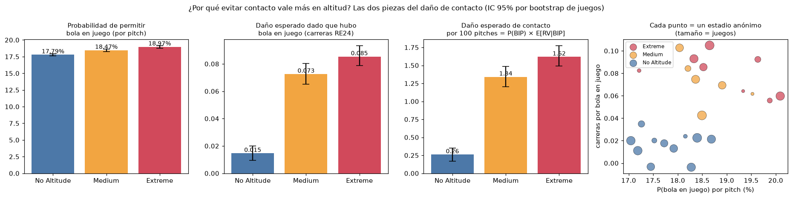
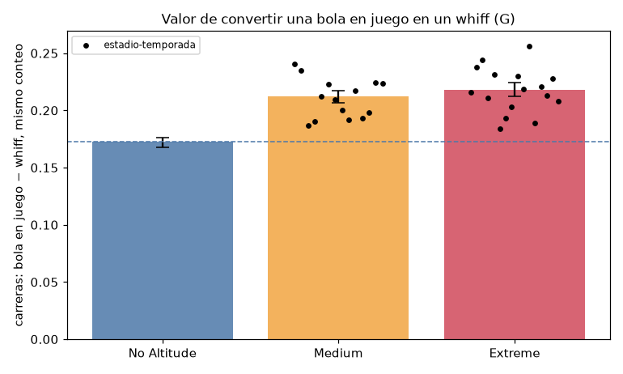
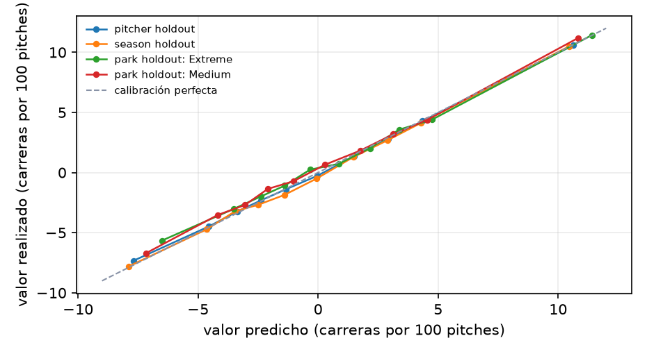

Hackathon de analítica deportiva · datos Trackman anónimos 2024–2026 · proyecto reproducible (python -m src.pipeline)
El reto pregunta cómo medir la calidad de pitcheo cuando se lanza en altitud extrema (las condiciones de la Ciudad de México) y qué pitchers y lanzamientos convienen en ese ambiente. El dataset está anonimizado: para cada juego solo indica si fue en No Altitude, Medium o Extreme Altitude. Respondemos con la categoría Extreme Altitude, sin identificar qué estadio anónimo es cuál.
Sabermetría. El valor de un evento se mide en carreras con la matriz de carreras esperadas por estado de outs y corredores (RE24): el run value de una jugada es RE después − RE antes + carreras anotadas (Tango, Lichtman y Dolphin, 2007). Los índices "plus" (Stuff+, Location+, Pitching+) expresan la calidad del pitcheo en una escala con media 100 y 10 puntos por desviación estándar; separan las características físicas del pitch, su ubicación y su valor total, que se estabilizan con muchos menos lanzamientos que los resultados (FanGraphs, 2022).
Física del béisbol. Un lanzamiento está sometido a gravedad, arrastre (drag) y la fuerza de Magnus producida por el giro; ambas fuerzas aerodinámicas son proporcionales a la densidad del aire (Adair, 2002; Nathan, 2008). A mayor altitud, el aire es menos denso: la pelota frena menos y el giro la mueve menos, así que los pitches se mueven menos y la pelota bateada vuela más. El Trackman ajusta una trayectoria de aceleración constante (9 parámetros) de la que salen el movimiento vertical inducido (IVB) y el horizontal (HB).
Entorno. Con los propios datos estimamos la fuerza del aire en cada estadio anónimo: en Extreme el drag es 0.83–0.90 y el Magnus 0.72–0.84 veces el de No Altitude (I² = 98%: los estadios de Extreme no son iguales entre sí). Los estadios se reconstruyen sin información externa (98.4% de los juegos asignados; 19/19 grupos conservan su categoría entre temporadas).
627,185 lanzamientos Trackman de 2,116 juegos (2024, 2025 y 2026 parcial), con velocidad, spin, eje, salida, extensión, movimiento, ubicación, conteo, resultado del pitch y de la jugada, y la categoría de altitud de cada juego. Se corrigió el valor del golpeado (run value +0.397) y se reconstruyó el estado de corredores por turno para RE24. Ninguna fuente externa.
Arquitectura: un árbol de probabilidades valuado en carreras. Pitching+ encadena cinco clasificadores LightGBM (Ke et al., 2017), cada uno entrenado en su universo: P(swing); el resultado si no hay swing (bola, strike cantado, golpeado); P(whiff | swing); P(foul | contacto); y el resultado de la bola en juego (out, sencillo, doble, triple, jonrón). Las diez probabilidades suman 1 y el valor esperado es
E[Δ] = Σ_evento P(evento | física, ubicación, conteo) × Δ(evento, conteo),
donde Δ es el cambio de carreras esperadas del turno: V(siguiente conteo) − V(conteo), o el valor terminal si el evento termina el turno. V(conteo) se obtiene hacia atrás desde los valores terminales con las frecuencias observadas de cada transición (el foul con dos strikes es un auto-lazo).
¿Por qué no regresar directamente el run value? Porque el run value de un pitch individual es casi todo ruido: un modelo de regresión directo con solo física quedó peor que el promedio por conteo. El árbol aprovecha que cada paso (swing, whiff, contacto) sí es predecible y valúa cada resultado con su costo en carreras. Tampoco sumamos Stuff+ y Location+: el valor de un buen movimiento depende de dónde termina el pitch y del conteo, y esa interacción la calcula el árbol.
Función de pérdida. Log-loss (entropía cruzada) binaria o multiclase en cada sub-modelo; hiperparámetros ajustados por sub-modelo con validación agrupada por pitcher. La log-loss premia probabilidades bien calibradas, que es lo que necesita un valor esperado.
Features.
Ambiente. Los modelos no reciben la altitud como variable. El ambiente se trata con un ajuste simple: a cada valor se le resta su promedio por temporada × estadio anónimo. Probamos también un contrafactual físico (re-simular cada trayectoria con el drag y el Magnus de otro ambiente); en la validación temporal estricta el ajuste simple predijo igual o mejor (sección 7), así que el contrafactual quedó como herramienta explicativa.
Sea θ̂ᵢ el promedio de un pitcher (P(whiff | swing) para Stuff+, valor de ubicación para Location+, E[Δ] para Pitching+), ajustado por ambiente. El shrinkage empírico-bayesiano normal–normal (Efron y Morris, 1975) lo encoge hacia la media de la liga:
θ̃ᵢ = μ + Bᵢ(θ̂ᵢ − μ), con Bᵢ = τ² / (τ² + σ²/nᵢ),
donde τ² es la varianza de la habilidad real entre pitchers y σ² la varianza por lanzamiento. La escala es
Índice+ = 100 + 10 · s · (θ̃ᵢ − μ) / τ,
con s = +1 si más es mejor (Stuff+) y s = −1 si menos carreras es mejor (Location+ y Pitching+). Así, 100 es el pitcher promedio y 10 puntos una desviación estándar de habilidad real, no de ruido. Para un lanzamiento individual (simulador) se usa la escala de lanzamiento: 100 + 10·s·(v − media)/sd sobre todos los lanzamientos reales.
AEPP (perfil para ambientes de altitud): carreras evitadas por 100 turnos frente a un pitcher promedio, con los valores en carreras medidos en Medium + Extreme y tasas con shrinkage:
AEPP = −100 · [Σ_{o ∈ K, BB, HBP} (rₒ − r̄ₒ)(vₒ − v_BIP) + r_BIP · (RV/BIPᵢ − RV/BIP̄)].
| métrica (Extreme vs. No Altitude, efectos fijos de pitcher, bateador, temporada y conteo) | No Altitude | Medium | Extreme [IC 95%] |
|---|---|---|---|
| whiff por swing | 24.9% | −1.3 pp | −2.9 pp [−3.4, −2.4] |
| ponche por turno | 20.3% | −2.9 pp | −4.7 pp [−5.2, −4.1] |
| bola en juego por swing | 37.8% | +2.5 pp | +4.0 pp [+3.4, +4.5] |
| run value por bola en juego | 0.015 | +0.058 | +0.068 [+0.058, +0.078] |


Medium se parece a Extreme (run value por bola en juego +0.058 vs. +0.068): hablamos de ambientes de altitud, no de un umbral. Altitud y estadio están confundidos (pocos estadios por categoría): son asociaciones consistentes, no un efecto causal aislado de la altitud.
Por tipo y por forma de pitch. Comparando al mismo pitcher consigo mismo:
Dentro de cada tipo, los pitches que más dependen del giro pierden más:
| tipo · forma (movimiento a nivel del mar) | Δ Stuff+ | Δ whiff/swing | Δ contacto duro | Δ HR/BIP |
|---|---|---|---|---|
| Four-Seam · bajo ride | −3.8 | −1.4 pp | +1.4 pp | +0.7 pp |
| Four-Seam · alto ride | −7.7 | −7.9 pp | +4.2 pp | −0.6 pp |
| Sinker · bajo corrida al brazo | −1.1 | −2.2 pp | +6.1 pp | +1.7 pp |
| Sinker · alto corrida al brazo | −2.6 | −1.7 pp | +3.3 pp | +0.0 pp |
| Slider · bajo barrido | +0.1 | −2.2 pp | +3.2 pp | −0.3 pp |
| Slider · alto barrido | −1.1 | −4.7 pp | −1.4 pp | −0.1 pp |
| Curveball · bajo caída | −0.9 | −0.4 pp | +4.1 pp | −1.1 pp |
| Curveball · alto caída | −4.0 | −7.3 pp | −3.9 pp | −0.2 pp |
| Changeup · bajo fade | −0.5 | −0.5 pp | +1.6 pp | +0.8 pp |
| Changeup · alto fade | −1.3 | −4.0 pp | +7.5 pp | +2.0 pp |
Explicación física: con menos Magnus, el pitch que depende del giro para "subir", barrer o caer pierde más pulgadas, y con ellas parte del swing-and-miss; lo que se pierde en whiff se paga en contacto, que en altitud es más caro. Contacto duro = velocidad de salida ≥ 95 mph, sensible a la calibración del Trackman (el hard contact% promedio pasa de 21.5% en 2024 a 26.2% en 2025).
Arsenal. El Stuff+ calculado solo con pitches de Extreme es más alto en arsenales de recta + slider (Four-Seam + Cutter + Slider: 105.5; Four-Seam + Slider: 104.3) y correlaciona 0.91 con el Stuff+ general del pitcher: el arsenal que rinde en Extreme es el que rinde en general.
Nivel lanzamiento (modelo final, misma especificación e hiperparámetros). Objetivo: el valor realizado del pitch, Δ(evento, conteo). Modelo nulo: el promedio del valor por conteo ("xRunValue promedio por conteo"), estimado en entrenamiento. El dataset no identifica estadios: el park holdout deja fuera todos los estadios de una categoría.
| esquema | pitches de prueba | RMSE modelo | RMSE nulo | mejora del MSE | pendiente de calibración | AUC Stuff+ (nulo por tipo) |
|---|---|---|---|---|---|---|
| pitcher holdout (k=5) | 627,185 | 0.2350 | 0.2407 | +4.65% | 0.98 | 0.651 (0.601) |
| season holdout (→ 2026) | 129,594 | 0.2339 | 0.2398 | +4.83% | 1.00 | 0.650 (0.603) |
| park holdout: Extreme | 180,794 | 0.2420 | 0.2471 | +4.10% | 0.96 | 0.650 (0.609) |
| park holdout: Medium | 154,048 | 0.2395 | 0.2449 | +4.33% | 0.98 | 0.650 (0.606) |

El valor de un pitch individual es muy ruidoso, por eso el RMSE baja poco en absoluto; lo importante es que el modelo supera al nulo y queda calibrado en pitchers, temporada y ambientes que no vio. Sin haber visto Extreme, subestima un poco su valor realizado (+0.0084 vs. +0.0106 carreras por pitch), lo que confirma que el contacto ahí cuesta más y justifica el ajuste por ambiente.
Nivel pitcher (temporada t → t+1). Estabilidad año a año: Stuff+ Physical 0.76, Pitching+ 0.57, Location+ 0.54, whiff/swing 0.51, run value por bola en juego −0.02. En la validación temporal estricta (entrenando solo con temporadas anteriores, 2025 → 2026), el ajuste simple por temporada × estadio anónimo (M1b) predice las carreras del año siguiente con r = 0.191 (mín. 100 pitches; 0.302 con mín. 300), por encima del contrafactual físico (0.148) y sin ajuste (0.158). AEPP predice las carreras en altitud del año siguiente con r = 0.26, mejor que Pitching+ (0.15; P = 98%) e igual que K−BB% con shrinkage (0.25); lo reportamos tal cual.
Reportes de respaldo: reports/validacion_fuera_de_muestra.md, reports/p0_altitude_pipeline.md, reports/p2_pitcher_profiles_altitude.md, reports/pitching_plus_general_vs_altitude.md, reports/optimal_pitch_by_environment.md, reports/auditoria_matematica.md.